4.1 L’utilisation des données et des logiciels : aspects réglementaires
Programme
Pédagogie
Compétences attendues
- Identifier dans le système d’information les données assujetties à réglementation
- Vérifier la mise en œuvre des principaux textes réglementaires sur l’utilisation et la conservation des données
- Identifier les principales catégories de licences de logiciels
Savoirs associés
- La législation réglementant l’utilisation des données :
- Rôle de l’autorité nationale de protection des données
- Caractéristiques des données soumises à la législation
- Obligations du responsable des traitements
- Droits des personnes dont les données sont collectées
- Les différentes catégories de licences de logiciels
Plan
- Cours 4.1.1 Les données assujetties à réglementation 4.1.2 La mise en œuvre des textes réglementaires 4.1.3 Les principales catégories de licence de logiciel
- Synthèse
Mots clés
Conformité • Données à caractère personnel • Données sensibles • Droits patrimoniaux • Logiciel • Loi Informatique et Libertés • Propriété intellectuelle • Registre de traitement des données • RGPD
L’article 1er de la loi dite « Informatique et Libertés » précise que « l’informatique doit être au service de chaque citoyen. Son développement doit s’opérer dans le cadre de la coopération internationale. Elle ne doit porter atteinte ni à l’identité humaine, ni aux droits de l’homme, ni à la vie privée, ni aux libertés individuelles ou publiques ». Quelles sont les données sensibles au sens de la réglementation ? Comment ces données doivent-elles être stockées, transmises, archivées ou, le cas échant, détruites ? Quel est l’impact du règlement général sur la protection des données (RGPD) ?
Cours
4.1.1 Les données assujetties à réglementation
- Les données de toute organisation font l’objet de collectes et traitements mais aussi d’opérations de diffusion et de conservation ;
- Elles doivent déclencher une vigilance spécifique par les organisations qui les gèrent ;
- Ces données peuvent concerner les salariés, les clients, les prospects, les fournisseurs et autres partenaires économiques.
Les données à caractère personnel (DCP)
Définition
Les données à caractère personnel sont les informations propres à une personne physique identifiée ou identifiable par :
- Un nom ;
- Un numéro d’identification ;
- Des données de géolocalisation ;
- Un identifiant en ligne ;
- Une caractéristique de l’identité physique, génétique, psychique, économique, culturelle ou sociale.
Exemple
Un email, une photo, une adresse postale, un numéro de téléphone, un numéro de sécurité sociale, une adresse IP constituent autant de DCP.
Les données sensibles
Définition
Les données sensibles sont celles dont le traitement peut provoquer des risques importants pour les personnes concernées.
- Les articles 9 et 10 du règlement général sur la protection des données personnelles (RGPD) qualifient les données suivantes de sensibles :
- Les données relatives à la santé, aux données génétiques, aux données biométriques ;
- L’appartenance syndicale ;
- Les opinions politiques et les convictions religieuses ou philosophiques ;
- L’origine raciale ou ethnique ;
- Les données concernant la vie et l’orientation sexuelle ;
- Les condamnations pénales, infractions et mesures de sûreté.
Exemple
Une information contenue dans un fichier relative à l’état de santé d’une personne (arrêt-maladie) constitue une donnée sensible.
A savoir
Données sensibles et données stratégiques Il ne faut pas confondre les données sensibles à caractère personnel et les données de l’entreprise dites «sensibles» comme les informations stratégiques, les secrets de fabrication ou les méthodes industrielles, les données financières, etc.
Les traitements des DCP
- Le principe de traitement des DCP sensibles repose sur l’interdiction des traitements desdites données.
A savoir
Article 2 de la loi dite « Informatique et libertés » modifié Constitue un traitement de données à caractère personnel toute opération ou tout ensemble d’opérations portant sur de telles données, quel que soit le procédé utilisé, et notamment la collecte, l’enregistrement, l’organisation, la conservation, l’adaptation ou la modification, l’extraction, la consultation, l’utilisation, la communication par transmission, diffusion ou toute autre forme de mise à disposition, le rapprochement ou l’interconnexion, ainsi que le verrouillage, l’effacement ou la destruction.
Les exceptions
- L’interdiction relative aux traitements des données sensibles à caractère personnel ne s’applique pas dans certains cas:
| Consentement explicite | - « Manifestation de volonté libre, éclairée et univoque par laquelle la personne concernée accepte par une déclaration ou par un acte positif clair que des DCP la concernant fassent l’objet d’un traitement » (RGPD, art. 4) ; - Exemple : la personne qui entre son nom, email sur un document en ligne exprime son consentement. |
|---|---|
| Obligations | Exercice du droit du travail (ex. : traitement d’un arrêt de travail). |
| Sauvegarde des intérêts vitaux | Personne se trouvant dans l’incapacité physique ou juridique de donner son consentement. Par exemple, traitement relatif aux intérêts d’une personne sous tutelle. |
| Activités légitimes | Traitement dans le cadre d’associations ou organismes à but non lucratif si les DCP ne sont pas communiquées en dehors dudit organisme (ex. : traitement des données des adhérents dans un parti politique). |
| DCP rendues publiques | Traitement de DCP transmises au public par la personne concernée (ex. : communication par une personne d’informations sur la santé la concernant aux médias). |
| Santé | Traitement de données liées à la médecine préventive ou de santé publique (ex. : menace de contamination transfrontalière par une maladie grave et contagieuse). |
Le respect des obligations
- Une fois que ces exceptions sont identifiées et s’appliquent à un traitement, il faut démontrer que le RGPD est respecté ;
- Le responsable des traitements est soumis à des obligations légales et réglementaires :
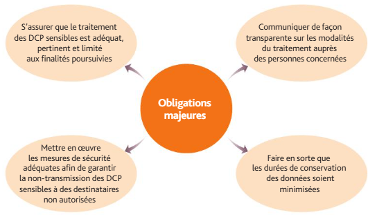
Exemple
La conservation des informations contenues dans les commandes de livres des clients d’une librairie peut, dans certains cas, relever de données de santé si le livre s’intitule “Comment guérir du sida ?” La durée de conservation de cette information doit être minimisée.
Mise en pratique
Cas pratique 1 : Skiback
L’entreprise Skiback, domiciliée à Béthune (Pas-de-Calais), vend des équipements de montagne et de randonnées. Elle a étendu son réseau commercial à travers le monde et compte à ce jour une base de données d’un million de clients. Un site Web http://www.skiback.com est géré par un prestataire ESN, la SARL Bath. Un stagiaire en DCG, Léo Pony, vient d’être accueilli chez Skiback pour répondre à des missions en systèmes d’information. La responsable des traitements, Sylvie Nérifor, lui confie quelques missions.
- Présentez les étapes principales de mise en conformité du système d’information de Skiback avec le RGPD.
- Expliquez la démarche actuelle relative à la déclaration des fichiers de données. Sylvie Nérifor a désigné un DPD.
- Sylvie Nérifor a désigné un délégué à la protection des données. Expliquez la raison d’être et les missions de ce délégué.
Cas pratique 2 : Véra-Vellir
Compétences attendues
- Identifier dans le système d’information les données assujetties à réglementation ;
- Vérifier la mise en œuvre des principaux textes réglementaires sur l’utilisation et la conservation des données.
La société Véra fabrique et vend des meubles à des particuliers. Elle mène actuellement une campagne de promotion confiée à la société Vellir. Véra a autorisé la société Vellir à utiliser son fichier clients afin de cibler les plus de 35 ans, propriétaires de leur logement et en couple. Ces informations avaient été recueillies dans le cadre de l’adhésion au programme de fidélité du magasin. Sur le formulaire, il était précisé que les informations seraient uniquement utilisées dans le cadre de l’activité de la société Véra. Les clients ont été informés, par un appel téléphonique, d’une offre de cadeau. Ils sont invités à fixer un rendez-vous pour sa remise de leur récompense. Missions
- Identifiez les caractéristiques de la collecte d’information concernant la clientèle de Véra.
- Identifiez les obligations de la société Véra concernant le fichier de données ainsi créé.
- Certains clients se sentent harcelés par les appels à répétition et souhaitent ne plus figurer dans le fichier de la société Véra. Rappelez les droits des utilisateurs et leurs modalités d’exercice.
- D’autres clients mécontents voudraient savoir quelles sont les informations dont dispose réellement la société Véra à leur égard. Rappelez les droits des utilisateurs et leurs modalités d’exercice.
- Cela fait plusieurs fois qu’une cliente, Mme Dottir, émet des demandes de radiation à l’attention de la société Véra. Pourtant, elle continue de recevoir des courriers et des appels téléphoniques. Indiquez les possibilité qui s’offrent à Mme Dottir.
- Mme Néseau est cliente depuis de nombreuses années et ne se souvient plus des informations qu’elle a communiquées la concernant. Indiquez les possibilité qui s’offrent à Mme Néseau.
- La société Vellir souhaite communiquer à des partenaires commerciaux les fichiers des clients de la société Véra. Vérifiez les obligations à respecter vis-à-vis des clients de la société Véra.
4.1.2 La mise en œuvre des textes réglementaires
Obligations issues du RGPD
- Le RGPD s’applique dans tous les pays de l’Union européenne depuis le 25 mai 2018 ;
- Il recense les conduites à tenir afin de protéger les personnes physiques à l’égard du traitement des données à caractère personnel et à la libre circulation de ces données au sein de l’UE ;
- Il abroge la directive européenne 95/46/CE (règlement général sur la protection des données) et s’inscrit dans la continuité de la loi dite « Informatique et Libertés » de 1978 ;
- La réglementation s’applique à toute organisation qui traite des données à caractère personnel (données portant sur des clients, prospects, usagers, salariés, visiteurs, etc.) ;
- La responsabilité des organismes est renforcée. Ils doivent désormais assurer une protection optimale des données à chaque instant et être en mesure de la démontrer en documentant leur conformité.
- Conditions de protection des DCP conformément au RGPD :
| Dispositions générales | Protection des DCP contenues dans des fichiers lors de traitements automatisés ou non. Concerne les personnes se trouvant sur le territoire de l’UE, que le traitement ait lieu ou non dans l’UE. |
|---|---|
| Principes | Collecte et traitement licites, avec le consentement des personnes concernées, ne portant pas sur des données interdites (sauf exceptions encadrées). |
| Droits de la personne concernée | Transparence sur les droits et accès aux DCP : informations sur l’identité et coordonnées du responsable du traitement, finalités du traitement, durée de conservation des données, droit à la consultation, rectification et effacement des DCP (droit à l’oubli), obligation de notification après rectification, effacement de DCP, droit d’opposition à tout moment du traitement des DCP. |
| Responsabilités | Mise en œuvre par le responsable du traitement des mesures techniques et organisationnelles appropriées pour être en mesure de démontrer que le traitement est conforme au RGPD (y compris si le traitement est effectué par un sous-traitant ou une ESN). |
| Transfert de données | Le transfert des DCP vers des pays hors UE ne doit pas compromettre la protection des données des personnes concernées. |
L’autorité de contrôle en France : la Cnil
- L’article 51 du RGPD dispose que « chaque État membre prévoit qu’une ou plusieurs autorités publiques indépendantes sont chargées de surveiller l’application du règlement, afin de protéger les libertés et droits fondamentaux des personnes physiques à l’égard du traitement et de faciliter le libre flux des données à caractère personnel au sein de l’Union » ;
- En France, l’autorité de contrôle est la Commission nationale de l’informatique et des libertés (Cnil).
La Cnil et de la loi Informatique et Libertés
- La loi n° 2018-493 relative à la protection des données personnelles du 20 juin 2018 a modifié la loi Informatique et Libertés du 6 janvier 1978 afin de satisfaire aux exigences du RGPD ;
- Depuis le 25 mai 2018, le RGPD est la référence pour toute organisation mettant en œuvre des traitements de DCP visant des personnes au sein de l’UE ;
- La bonne compréhension du cadre juridique suppose de lire de manière combinée le RGPD et la loi du 6 janvier 1978 ainsi « consolidée » ;
- L’article 11 de la loi du 20 juin 2018 précise que « la Commission nationale de l’informatique et des libertés est une autorité administrative indépendante. Elle est l’autorité de contrôle nationale pour l’application du RGPD. »
Les missions de la Cnil
- La Cnil a une triple mission :
- Informer les particuliers et professionnels et tous les responsables de traitements des données de leurs droits et obligations ;
- Accompagner et conseiller les responsables de ces traitements pour une mise en conformité avec la loi et le RGPD ;
- Anticiper et assurer une veille en matière d’évolution des technologies de l’information et rendre publique son appréciation des conséquences qui en résultent.
Exemple
Le 31 décembre 2021, la Cnil a sanctionné Google pour un montant total de 150 millions d’euros (90 millions d’euros pour Google LLC et 60 millions d’euros pour Google Ireland Ltd) parce qu’il n’est pas permis aux utilisateurs de google.fr et de youtube.com de refuser les cookies aussi facilement que de les accepter.
Le registre de traitement des DCP
Le rôle du responsable des traitements
- Le responsable des traitements d’une entreprise, association ou toute autre organisation, se doit de satisfaire aux obligations inhérentes à l’utilisation de DCP et de recenser tous les traitements de DCP qui s’exécutent au sein de l’organisation ;
- Le recensement ne concerne pas les applications utilisées mais des traitements de données qui y sont effectués par leur intermédiaire.
Exemple
La gestion de la paie nécessite d’utiliser plusieurs applications de façon combinée :
- Logiciel bancaire ;
- Logiciel d’enregistrement comptable ;
- Logiciel de base de données contenant les conditions de rémunération des salariés ;
- Logiciel de calculs des bulletins de salaires ;
- Logiciel de gestion des ressources humaines. Les DCP inhérentes au traitement de la gestion de la paie sont :
- Les nom, prénom, adresses ;
- Les données bancaires. Le traitement principal reste bien la gestion de la paie mais repose sur le traitement préalable de DCP.
Les caractéristiques des missions du responsable des traitements
- L’obligation de tenir un registre de traitement des données concerne tous les organismes, publics comme privés quelle qu’en soit la taille, dès lors qu’ils traitent des données personnelles ;
- Le responsable des traitements doit informer les personnes concernées des conditions de collecte des DCP (finalités, durées, consentement) et de leurs droits d’opposition, de consultation et de modification desdites données ;
- En cas de manquement à ces obligations, la Cnil peut être saisie ou intervenir directement ;
- Le format du registre est libre (papier ou électronique) ;
- Le registre doit être mis à jour régulièrement en fonction des modifications apportées aux traitements des données.
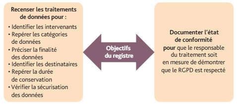
A savoir
Les cookies, traceurs déposés notamment lors de la consultation de sites Internet ou à l’ouverture de courriers électroniques, n’échappent pas aux obligations d’information et d’obtention du consentement des internautes.
Les process de mise en conformité avec le RGPD
Les étapes
- La mise en conformité se déroule en quatre étapes principales :
| Étape 1. Constituer le registre des traitements | - Identifier les activités principales reposant sur un traitement de données et créer une fiche par activité ; - Préciser pour chaque fiche : * La finalité ; * Les catégories de données utilisées ; * Les destinataires des données ; * La durée de conservation des DCP. |
|---|---|
| Étape 2. Trier les données | - Vérifier que les données sont nécessaires aux activités ; - Vérifier qu’aucune donnée dite « sensible » n’est traitée indûment ; - S’assurer que seules les personnes habilitées ont accès aux données. - S’assurer que la durée de conservation des DCP est pertinente et en correspondance avec les objectifs de la collecte de la donnée… |
| Étape 3. Respecter les droits des personnes | Informer les personnes (clients, salariés, etc.) sur : - La finalité de la collecte des données ; - L’accès aux données : services internes compétents ; - La durée de conservation des données ; - Les modalités de réclamation, d’opposition, de modifications des données (s’adresser au responsable des traitements, ou en cas de non réponse, à la Cnil) ; - Le transfert des données hors de l’UE. |
| Étape 4. Sécuriser les données | Respecter l’obligation légale d’assurer la sécurité DCP : - Mise à jour des antivirus et logiciels sécuritaires ; - Changement régulier des mots de passe (MDP) et utilisation de MDP complexes ; - Chiffrement des données afin de les rendre incompréhensibles ; - Prévision des règles automatiques d’effacement en fonction des durées légales de conservation. |
- La mise en conformité implique des coûts variables selon la taille de l’entreprise, la complexité de l’activité et les process en cause.
A savoir
Le coût de mise en conformité est de :
- 2 000 €, pour les TPE de moins de 10 salariés ;
- De 5 000 à 10 000 €, pour les entreprises de 10 à 100 salariés ;
- De 20 000 à 50 000 €, pour les entreprises de 100 à 500 salariés. Le régulateur européen a prévu des amendes considérables en cas de persistance de négligences ou de violations délibérées du RGPD : 20 millions d’euros pour les PME et jusqu’à plusieurs milliards pour les grands groupes (4 % de leur CA global).
Le délégué à la protection des données (DPD)
- Les missions du DPD (ou Data Protection Officer, DPO en anglais) sont clairement définies dans le RGPD (articles 38 et 39) ;
- Son rôle consiste à conseiller, de manière indépendante, le responsable du traitement de l’organisation et de s’assurer que le RGPD est bien respecté par l’organisation ;
- Véritable pilote de la conformité, le DPD réunit les personnes concernées par le RGPD et sensibilise l’ensemble des collaborateurs ;
- Il est obligatoire de désigner un DPD dans trois cas :
- Organisme public ou autorité publique ;
- Suivi à grande échelle de personnes (ex. : sites d’e-commerce) ;
- Traitement de données sensibles (ex. : santé) à grande échelle.
Les sanctions effectives, proportionnées et dissuasives
- Le RGPD met en œuvre différentes sanctions selon le degré de gravité des infractions et/ou des négligences commises, du simple avertissement à l’amende en l’absence de réaction de l’organisation, en passant par la mise en demeure (RGPD, art. 83) ;
- Avec le RGPD, le montant des sanctions pécuniaires peut s’élever jusqu’à 20 millions d’euros ou dans le cas d’une entreprise jusqu’à 4 % du chiffre d’affaires annuel mondial ;
- Ces sanctions peuvent être rendues publiques.
- Au regard des montants des sanctions, de nombreux acteurs ont intérêt à porter plainte (syndicats, représentants du personnel, salariés licenciés, associations de consommateurs, associations de défense de la vie privée, clients mécontents…).
Exemple
La Cnil, en conformité avec le RGPD, a prononcé le 7 juin 2018 une sanction de 250 000 euros à l’encontre d’Optical Center pour avoir insuffisamment sécurisé les données de ses clients effectuant une commande en ligne à partir de son site Internet.
La mise en œuvre d’actions de sécurité renforcée
Le RGPD et la sécurité
- La conformité avec le RGPD de toutes les données traitées est obligatoire ;
- Cependant, certains traitements sont considérés par le RGPD comme encore plus risqués ; ils font l’objet d’une sécurité renforcée (contrôle d’accès augmenté, etc.).
Exemple
Parmi les données nécessitant des actions de sécurité renforcée, on trouve notamment :
- Les données liées à la vidéosurveillance ;
- Les données sensibles (ex. : santé) ;
- Les données liées à une segmentation comportementale (ex. : utilisation des cartes de fidélité pour des opérations de prospection ciblée) ;
- Les données qui permettent l’attribution de crédits automatiques ;
- Le traitement en masse de données (plus de 100 000 personnes : clients, prospects, salariées, etc.).
Les cas de violation des DCP
- Si l’entreprise a subi une violation de données (des données personnelles ont été, de manière accidentelle ou illicite, détruites, perdues, altérées, divulguées ou il a été constaté un accès non autorisé à des données), il faut agir :
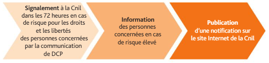
Mise en pratique
Cas pratique 3 : Ambu 44
Compétence attendue
- Identifier dans le système d’information les données assujetties à réglementation.
La société Ambu 44 propose 365 jours/365 des services ambulanciers dans toute l’agglomération nantaise. 58 salariés travaillent à ce jour dans cette société. Les transports des patients se font assis ou couchés dans les meilleures conditions possibles pour la santé des patients. L’entreprise assure également des rapatriements sanitaires sur le territoire français et en Europe. Une base de données des patients a été constituée au fil des années. Dans le cadre de ses activités, le dirigeant, Samir Ben Rachid, souhaite consulter un spécialiste des traitements pour vérifier qu’Ambu 44 respecte les obligations en matière de traitement des données. Éclairez Samir Ben Rachid sur les points suivants et justifiez vos réponses :
- Les données concernant les patients sont-elles des données à caractère personnel sensibles ?
- Les données sont conservées sur les serveurs de l’entreprise situés dans les locaux administratifs, sis 44 rue de l’Océan à Nantes. Quelles sont les précautions à prendre quant à la durée de conservation des données ?
- Un stagiaire de DCG vient d’être installé dans le bureau de la responsable commerciale, Dottir Samuelson. Il dispose d’un ordinateur pour ses missions comptables pendant 5 semaines. Il est chargé d’établir les factures des patients transportés par Ambu 44. Ce traitement des données à caractère personnel est-il autorisé ? Quelles précautions Ambu 44 doit-elle prendre ?
- Un stagiaire de l’école d’infirmiers de Nantes accompagne les ambulanciers pendant 3 mois. Il est chargé d’accueillir les patients dans le véhicule et recueillir des données permettant de renseigner le dossier du patient. Il est très investi dans sa mission et a tendance à bavarder et échanger facilement avec les patients. Quelles sont les recommandations qu’Anniken Bergliot, responsable des traitements, doit lui transmettre ?
Cas pratique 4 : Reykjavik
Compétence attendue
- Vérifier la mise en œuvre des principaux textes réglementaires sur l’utilisation et la conservation des données.
La société Reykjavik, domiciliée à Aurillac (Cantal), gère un restaurant situé en centre-ville et offrant des prestations de privatisation de salles pour des mariages, fêtes d’anniversaire, etc. Un service de livraison des repas à domicile est également disponible le week-end grâce à des livreurs salariés Le site Web est très fréquenté par les internautes qui y recherchent des informations sur les tarifs et les disponibilités. Afin de respecter le RGPD, le dirigeant a demandé conseil à un cabinet juridique. Analysez et appréciez les risques auxquels s’expose la société Reykjavik au regard des données à caractère personnel traitées au cours des opérations listées ci-après :
- Les clients du restaurateur ont communiqué leurs adresses et codes d’entrée de leur immeuble pour les livraisons.
- L’ancien responsable RH, démissionnaire, avait constitué un fichier du personnel comportant des commentaires sur la personnalité, l’état de santé ou l’appartenance à un syndicat. Par ailleurs, plusieurs personnes souhaiteraient faire un point sur les données personnelles communiquées à la société Reykjavik.
- M. Sprengi, client de la société depuis de nombreuses années, souhaite consulter les données le concernant. En a-t-il le droit et, si oui, comment doit-il s’y prendre ?4
- Mme Breid, salariée, a, à maintes reprises, demandé qu’on lui communique les informations la concernant détenues par le service RH. Quels sont ses droits ?
- M. Snefell, commercial, a découvert que sa secrétaire connaissait sa situation familiale, son adresse personnelle et son numéro de téléphone sans que lui-même ait souhaité les lui communiquer. Il a appris qu’elle tenait ces informations du responsable des ressources humaines qui les transmettait aux secrétaires afin qu’elles puissent entrer en contact avec les salariés et se faire une idée de leurs habitudes familiales pour mieux cerner leur disponibilité.
- Lors de la consultation du site restaurantrekjavik.com, les internautes peuvent lire la mention suivante : « Les cookies nous permettent de personnaliser le contenu et les annonces, d’offrir des fonctionnalités relatives aux médias sociaux et d’analyser notre trafic, Accepter, Refuser, En savoir plus ». Expliquer la présence de cette mention sur le site.
4.1.3 Les principales catégories de licence de logiciel
La protection des logiciels
- Les logiciels sont une œuvre de l’esprit et entrent dans le champ d’application de la propriété intellectuelle ;
- Les logiciels et programmes informatiques bénéficient de la protection par le droit d’auteur ;
- La copie illicite du logiciel original s’apprécie en fonction des similitudes constatées entre l’original et la contrefaçon.
Les droits associés aux logiciels
- Les droits patrimoniaux relatifs aux logiciels reposent sur le droit de les exploiter ;
- Ce droit d’exploitation concerne la reproduction, la modification, la mise sur le marché à titre onéreux ou gratuit du logiciel :
- Les droits appartiennent à (aux) auteur(s) qui ont créé le logiciel ;
- Les droits d’un logiciel créé par les employés dans le cadre de leur activité s’exercent au profit de l’employeur. Le dépôt d’un brevet
- La conception du logiciel (idées, principes, algorithmes…) n’est pas protégée, seule peut l’être la traduction concrète des concepts (programmes, architecture du logiciel, écrans, documentation) ;
- Les concepteurs de logiciels doivent apprécier leur situation au regard du droit afin d’agir de façon à se protéger au mieux :
- Le logiciel n’est pas brevetable, sauf s’il s’intègre à une invention technique ;
- Le nom des logiciels est également protégé, comme une marque (une recherche d’antériorité doit précéder le choix d’un nouveau nom) ;
- Les programmes peuvent être déposés pour constituer un élément de preuve de la propriété (chez un notaire, à l’Inpi, sous enveloppe Soleau, auprès de sociétés spécialisée ou de l’Agence pour la protection des programmes – APP).
Les licences d’utilisation
Les types de logiciels
- Les droits patrimoniaux permettent à l’auteur de concéder son droit d’utilisation à autrui ;
- Cette concession prend la forme d’une licence dont l’étendue est prévue contractuellement ;
- On distingue notamment quatre catégories de licences :
| Caractéristiques | Droit d’utiliser | Droit de copier | Droit de modifier | Droit de diffuser | |
|---|---|---|---|---|---|
| Commercial | - Payant - Rémunération de l’éditeur | Oui | Non (sauf sauvegarde) | Non | Non |
| Shareware | - Payant après une période d’essai gratuit - Rémunération directe de l’auteur | Oui | Non (sauf sauvegarde) | Non | Non |
| Freeware | Gratuit | Oui | Oui | Non | Oui (gratuit) |
| Libre ou open-source | - Gratuit ou non - Code des programmes (source) fourni | Oui | Oui | Oui | Oui (diffusion des amélio-rations dans une commu-nauté) |
L’usage illégal
- Les organisations ne peuvent utiliser que des logiciels dont elles sont propriétaires ou pour lesquels elles disposent d’une licence ;
- L’usage illégal de logiciel (piratage) est une atteinte à la propriété intellectuelle et au droit d’auteur passible de sanctions pénales (peines d’emprisonnement et d’amende) et civiles (dommages-intérêts) ;
- D’autres sanctions sont possibles comme la confiscation des matériels, la fermeture de l’établissement ou encore l’interdiction de soumissionner aux marchés publics ;
- Des contrôles peuvent être menés afin de vérifier le respect de ces obligations de licence.
Mise en pratique
Cas pratique 5 : Ice Mountain
Compétence attendue
- Identifier les principales catégories de licences de logiciels.
Spécialisée dans la fabrication et la vente de matériaux composites dédiés à la protection contre le froid, l’entreprise Ice Mountain emploie 144 personnes. Ice Mountain comporte aujourd’hui deux centres de production (Besançon et Caen) et un bureau d’études (Melun) qui conçoit et teste des nouveaux matériaux. Le centre administratif situé à Grenoble rassemble les services informatique, comptable et commercial. Le service informatique travaille notamment sur le développement de logiciels de conception assistée par ordinateur (CAO) et sur l’exploitation des données issues des tests de qualité effectués sur les prototypes de matériaux. Vous participez à divers travaux sur les droits d’utilisation des logiciels et donnez votre avis sur les situations suivantes :
- Un informaticien d’Ice Mountain a mis au point un logiciel qui exploite les résultats des tests sur les prototypes de fibre isolante. Il souhaite développer cette application en dehors de l’entreprise.
- La licence d’un logiciel de calculs scientifiques, créé par la SA Versri, éditeur de logiciels, a été renouvelée en septembre. La licence portait sur 5 postes. Or, un technicien réseau embauché récemment a copié la licence sur l’ensemble du réseau, soit 144 postes.
- La société Ice Mountain utilise un logiciel libre pour le traitement de données de R&D. Un prestataire, l’entreprise de services numérique VDLT, vient d’assurer une formation aux 25 salariés du bureau d’études, facturée 12 555 € HT.
- Un logiciel en freeware est exploité au sein d’Ice Mountain, pour mesurer la résistance des matériaux au froid. Un ingénieur informaticien vient de modifier le logiciel afin d’ajouter des paramètres de mesure.
- Un éditeur, la SARL HF, vient de mettre au point un nouveau logiciel dédié à la logistique de marchandises. Ice Mountain vient d’en acquérir 20 licences installées sur le service distribution. Le responsable informatique d’Ice Mountain vient de dupliquer ce logiciel dans les serveurs de Besançon et Caen afin d’assurer les problématiques logistiques de ces centres de production et au centre de Grenoble afin d’en assurer une sauvegarde. Appréciez chacune de ces situations au regard des droits associés aux logiciels.
Synthèse
| Données assujetties à réglementation | - Données à caractère personnel (DCP) - Données sensibles - Contenus possibles d’un traitement de DCP - Conditions de traitement de DCP sensible |
|---|---|
| Mise en œuvre des textes législatifs et réglementaires (loi Informatique et Libertés modifiée, RGPD) | - Conditions de protection des DCP dans le RGPD - Rôles du responsable des traitements - La Cnil : autorité de contrôle - Missions de la Cnil - Contenus du registre des traitements du RGPD - Mise à jour régulière du registre des traitements - Process de mise en conformité du registre des traitements - Rôle du délégué de protection des données (DPD) - Sanctions effectives, proportionnées et dissuasives - Mise en œuvre d’une sécurité renforcée pour certaines données afin de faire face à des cyberattaques, cyberrançonnages. |
| Catégories de licences de logiciels | - Logiciels : œuvres de l’esprit entrant dans l’application de la propriété intellectuelle - Droits associés aux logiciels - Différents types de logiciels : commercial, shareware, freeware, libre (open-source) - Usage illégal de logiciels (parfois piratés) |
4.2 La sécurité du système d’information
Programme
Pédagogie
Compétences attendues
- Identifier et hiérarchiser les principaux risques liés à la sécurité du SI
- Identifier les mesures de protection à mettre en place
- Appliquer les procédures de sécurité
- Analyser la fiabilité des procédures et des traitements
- Prendre en compte la dimension humaine dans la gestion des risques
- Justifier le recours à la signature électronique et au certificat numérique
- Identifier les droits attribués aux utilisateurs sur les objets d’une base
Savoirs associés
- Critères de la sécurité des systèmes d’information (disponibilité, intégrité/inaltérabilité, confidentialité, traçabilité, imputabilité et non-répudiation)
- Risques, menaces, vulnérabilités
- Responsabilité de la sécurité du SI
- Le rôle du facteur humain dans la sécurité du système d’information
- Outils et procédures de protection, de sauvegarde et de restauration de données
- Principes et techniques de la signature électronique et du certificat numérique
- Attribution des droits aux utilisateurs ou groupes d’utilisateurs sur les objets de la base
Plan
- Cours 4.2.1 L’identification des risques et menaces pesant sur la sécurité du SI 4.2.2 La prévention des risques de sécurité 4.2.3 L’organisation d’un SI fiable 4.2.4 Les rôles des responsables de la sécurité 4.2.5 La signature et le certificat numériques 4.2.6 La gestion de l’accès aux bases de données
- Synthèse
Mots clés
Charte informatique • Confidentialité • Disponibilité • Imputabilité • Intégrité/inaltérabilité • Non-répudiation • Responsabilité de la sécurité • Restauration de données • Sauvegarde • Traçabilité
La sécurisation du SI consiste à protéger ce dernier des pannes, des accidents, des intrusions, des malveillances et des maladresses. Préoccupation partagée dans l’organisation, la sécurité informatique passe par la communication et le rappel des règles, procédures de sauvegarde de données, l’organisation de systèmes de secours, les procédures d’urgence qui sont autant de moyens pour mettre en place et promouvoir une démarche globale. La sécurisation absolue (risque zéro) est toutefois impossible
Cours
4.2.1 L’identification des risques et menaces pesant sur la sécurité du SI
- Une défaillance du système d’information peut avoir diverses répercussions :
| Discontinuité de service | Indisponibilité du réseau, des applications, interruption totale ou partielle du travail sur les sites de l’entreprise ou à distance (télétravail). |
|---|---|
| Perte de données | Destruction ou altération de tout ou partie des données enregistrées pouvant entraîner une altération de la réputation Web de l’entreprise. Vol de données avec demande de rançon (cyber-rançonnage). |
| Divulgation intempestive d’informations | Communication d’informations confidentielles (DCP ou stratégiques) à la concurrence, à la presse, aux partenaires ou encore au public sans consentement ni légitimité. |
| Perte de temps | Temps passé à rétablir le fonctionnement du SI après un incident, à partir de sauvegardes ou en reconstituant des données. |
| Responsabilité civile et pénale de l’entreprise | Mise en cause de l’entreprise sur le plan civil ou pénal pour usage illégal de logiciels ou de données, publication d’informations erronées, négligence dans la protection des données à caractère personnel. |
| Coût | Charge occasionnée par les dysfonctionnements et leur réparation technique, commerciale et/ou juridique. Ces coûts peuvent être élevés et nuire à la survie même de l’entreprise. |
- L’enjeu actuel consiste à contrôler l’exposition aux risques associés au système d’information et donc à les recenser préalablement.
Les risques d’origine matérielle
- La sécurité peut être menacée par des problèmes affectant le matériel :
- Sinistre sur les ordinateurs, serveurs, onduleurs, câbles, supports de sauvegarde (incendie, dégât des eaux, surtension) ;
- Vol par une personne extérieure à l’entreprise ou un salarié (ordinateur fixe/nomade, supports de sauvegarde) ;
- Panne (disque dur, équipements d’interconnexion tels que des routeurs, commutateurs, câblage) ;
- Coupure d’alimentation électrique (qui peut avoir une incidence sur les supports de données) ;
- Maladresse humaine (chute d’un ordinateur, mauvaise manipulation d’un support de sauvegarde) ;
- Dégradation volontaire, perte.
Exemple
L’entreprise ARTIC 44 a subi de grosses inondations le mois dernier. Le local technique, situé dans le sous-sol, a été très touché. Les deux serveurs de données et le stock d’ordinateurs portables sont désormais inutilisables.
Les malveillances d’origine humaine
- Les actes malveillants touchent notamment le logiciel et les données enregistrées sur les supports de sauvegarde et d’archivage informatiques ;
- Leurs origines sont variées :
| Programme malveillant propagé par un fichier, un réseau, des courriels… | - Virus (s’exécute et/ou s’installe lorsque l’utilisateur réalise une action). Il peut effacer des données, détériorer le système d’exploitation. - Ver ou worm (se réplique sur un réseau, provoquant l’effacement de fichiers, de programmes, la saturation du réseau…). - Cheval de Troie ou trojan (collecte et/ou altère des données personnelles à l’insu de l’utilisateur, divulgue des données privées via les courriers électroniques…). - Logiciel-espion ou spyware (collecte des données personnelles afin d’en tirer profit, exploitation à des fins commerciales…). - Porte dérobée ou backdoor (permet d’accéder à un ordinateur ou d’en prendre le contrôle à distance). - Enregistreur de frappe ou keylogger (enregistre les touches utilisées par un utilisateur afin de récupérer des mots de passe, des identifiants…). |
|---|---|
| Fraude ou malveillance | - Agissements volontaires des salariés ou ex-salariés en vue d’en tirer un profit personnel ou de nuire à l’entreprise (introduction d’un programme malveillant, transmission ou falsification de données sensibles, détournement de fonds…). - Actes souvent cachés par les entreprises elles-mêmes pour ne pas effrayer les clients, déclencher un climat de suspicion interne ou ternir leur e-réputation. - Vol de données avec demande de rançon. |
| Exploitation indésirable de la messagerie | - Pourriel ou spam (courrier électronique non sollicité encombrant les réseaux). - Hameçonnage, fishing ou phishing (redirection de l’internaute vers une page d’écran factice pour lui soutirer des informations personnelles). - Canular ou hoax (courrier électronique contenant une information alarmante poussant l’internaute à une action injustifiée). |
A savoir
29 % des pannes du SI sont d’origine interne (Clusif, 2020). Ces pannes coûteraient quelque 500 000 € chaque année aux entreprises françaises. Le frein à la mise en place de politique de sécurisation du SI est essentiellement budgétaire.
Les carences hypothéquant la sécurité du SI
- Les carences proviennent d’actes résultant de l’incompétence, de la négligence ou de l’ignorance :
- Le non-respect d’une procédure sécuritaire (accès limité aux bureaux, au local des serveurs), la mise à jour irrégulière des logiciels de protection peuvent favoriser des intrusions frauduleuses ou des vols de matériel ;
- La méconnaissance de la loi sur les droits d’auteur, du règlement général sur la protection des données (RGPD), de la loi Informatique et Libertés peut aboutir à des poursuites civiles et/ou pénales de l’entreprise ;
- Le manque de suivi du SI. Selon le rapport 2020 des « Menaces informatiques et pratiques de sécurité en France » du Club de sécurité de l’information français (CLUSIF), seules 66 % des entreprises interrogées ont réalisé un audit de leur SI au cours des deux dernières années ; Des maladresses dans la manipulation des logiciels, du progiciel de gestion intégré (PGI), des fichiers, dans la saisie des données et des accès à Internet peuvent conduire à des effacements de données, des divulgations d’informations confidentielles ou à une dégradation de la qualité des données enregistrées ; Transmission d’identifiants et de mots de passe entre salariés.
Exemple
L’entreprise ARCTIC 44 a perdu en rapidité de traitement sur ses opérations comptables et financières cette année à la suite de l’installation d’un nouveau PGI. Or, le temps de formation des salariés à ce nouveau logiciel a été réduit pour des raisons budgétaires. Les salariés n’exploitent pas tout le potentiel du PGI et ne sont pas efficaces. Ils ont développé une résistance au changement.
Les critères de sécurité
- Pour s’assurer du niveau optimum de sécurité du SI, plusieurs critères sont mobilisables :
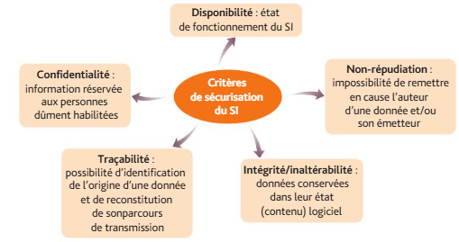
Mise en pratique
Cas pratique 1 : Doisneau
L’entreprise Doisneau, domiciliée à Corbeil (Essonne), fabrique des enceintes pour des équipements de home-cinéma. L’entreprise est composée de 91 salariés, dont 77 travaillent dans les ateliers et le reste dans les services financier, administratif et informatique. Le responsable informatique a rédigé l’année dernière une charte informatique, qu’il vient de mettre à jour. Diverses consignes sécuritaires sensibilisent les salariés à l’adoption d’une conduite sécuritaire. Il y a deux ans, un gros incident (intrusion frauduleuse sur le réseau) a laissé des traces parmi les personnels car de nombreuses données (secrets de fabrication, clients) avaient été volées. Le responsable informatique présente également le plan de reprise d’activité prévu en cas d’incident sur le SI. Il explique qu’il a mis en place une sauvegarde complète le lundi à 2 heures du matin et une sauvegarde différentielle le jeudi à 2 heures du matin, de façon automatisée. Les serveurs et supports de sauvegarde sont dans un local technique sécurisé.
- Un salarié demande en quoi consiste un PRA et en quoi il est utile en cas de perte de données
- Un autre salarié s’interroge quant à l’utilité d’une charte informatique
- Un stagiaire de DCG, présent à la réunion, a commis une erreur de manipulation sur un logiciel et a effacé des données importantes. Il s’excuse de sa maladresse et demande si les données ont été restaurées
4.2.2 La prévention des risques de sécurité
- La prévention des risques doit reposer sur une analyse initiale objective et précise des risques possibles (notamment un audit du système d’information) puis sur l’établissement et la mise à jour régulière de plans de sécurisation.
Identifier la vulnérabilité du SI : recenser et hiérarchiser les risques
- Une fois les risques identifiés, l’entreprise doit les hiérarchiser afin d’apporter des solutions adaptées au degré d’urgence ;
- Un audit sécuritaire du SI de l’entreprise permet de recenser les risques et d’estimer leur gravité ou leur acceptabilité ;
- Plus le niveau de vulnérabilité est élevé, plus il y a urgence à déclencher une mise en conformité sécuritaire :
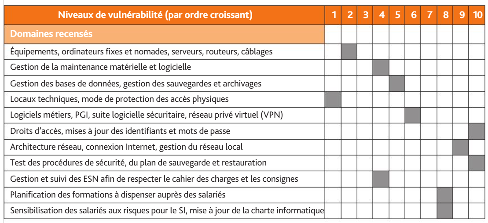
Traiter les risques
- Une fois que les priorités sont établies, l’entreprise met en conformité les domaines identifiés comme menacés, l’objectif étant d’intervenir avant que survienne la panne et sur les points les plus graves et urgents.
Exemple
L’entreprise ARCTIC 44 établit un recensement des risques auxquels est exposé le SI. Il semble urgent de déclencher des actions de mise aux normes concernant la gestion des droits d’accès, l’architecture réseau et les procédures sécuritaires.
Prévenir les menaces
- La prévention des risques matériels
- Sécuriser les locaux (badges, caméras de surveillance, digicodes), suivre les accès aux sites sensibles et aux dispositifs d’extinction automatique d’étanchéité au feu, à l’eau, suivi de la température, de l’hygrométrie ;
- Réaliser un inventaire périodique des matériels ;
- Archiver les données et les logiciels dans un lieu autre que celui qui héberge les ordinateurs, externaliser les sauvegardes ;
- Bloquer les accès à certains périphériques externes (lecteurs de CD, ports USB) ;
- Installer un onduleur pour protéger les matériels des coupures de courant ;
- Prévoir des serveurs redondants ou partenaires pour basculer l’exploitation en cas de panne du ou des serveurs principaux.
- La prévention des risques logiciels et de données
- Définir des actions de sécurisation (logiciel antivirus, anti-spyware, pare-feu, DMZ (zone démilitarisée) sur le réseau local. Un pare-feu ou firewall est un dispositif capable de filtrer les échanges d’information entre deux réseaux, notamment entre un réseau local et l’extérieur, afin de bloquer les communications indésirables. Une DMZ est une partie de réseau local protégée de l’extérieur par un pare-feu ;
- Gérer les droits d’accès (identifiants et mots de passe) et définir des profils d’utilisateurs cohérents au regard des postes occupés ;
- Identifier le degré de sensibilité des données et prévoir des politiques de sécurisation ad hoc ainsi que le chiffrement de certains échanges ou stockages de données ;
- Retreindre les droits administrateurs sur les postes nomades ;
- Chiffrer les disques durs, les données lors des transmissions internes ;
- Effacer les données sur les disques durs et supports de sauvegardes mis au rebut.
- La prévention des risques organisationnels et humains
- Sensibiliser le personnel aux risques informatiques, former ;
- Mettre régulièrement à jour les droits d’accès, administrer les droits des utilisateurs et les accès aux répertoires en fonction des profils de poste, mettre en place des mots de passe tournants (rolling code) et lecteurs biométriques (empreintes digitales) ;
- Rédiger une charte informatique précisant les règles de sécurité interne ;
- Préconiser une fermeture de session automatique au-delà d’un certain délai d’inutilisation (lock de session) ;
- Définir un plan de sauvegarde des données et l’actualiser périodiquement, prévoir des procédures de restauration des données si celles-ci ont été volées ou détruites ;
- Vérifier la conformité entre les pratiques liées aux données et la législation ;
- Synchroniser les données lors de déplacements professionnels avec ordinateurs nomades ;
- Assurer un suivi régulier avec les prestataires du SI (ESN) ;
- Prévoir des informations et des formations relatives aux modalités de télétravail.
Mise en pratique
Cas pratique 2 : ICE13
Compétence attendue
Identifier et hiérarchiser les principaux risques liés à la sécurité du SI.
La société anonyme ICE13 fabrique des modules électroniques de haute technologie dédiés au secteur automobile. L’entreprise a été créée en 1996 à Marseille et compte aujourd’hui 585 salariés. La concurrence est vive dans ce secteur et la confidentialité des travaux de R&D est importante. Un incident a eu lieu le mois dernier et le responsable de la sécurité fait un compte rendu de la situation auprès de la direction. Les éléments annexés ont été évoqués. Identifiez les critères de sécurité impactés par les différentes situations relevées.
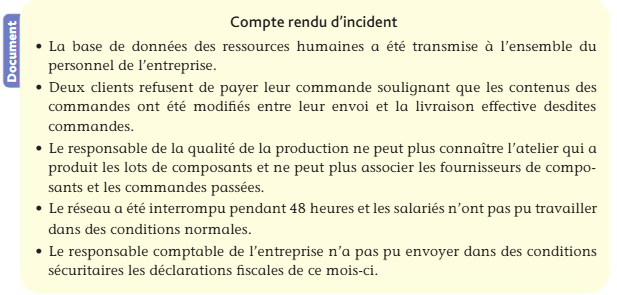
4.2.3 L’organisation d’un SI fiable
La politique de définition des plans de sécurité
- Il est possible de dégager les dix commandements de la politique de sauvegarde suivants :
- Les travaux effectués au quotidien sur chaque poste de travail et sur les serveurs doivent faire l’objet d’une sauvegarde (une recopie) afin de permettre la continuité du travail en cas d’incident ;
- Les serveurs peuvent être équipés de dispositifs de sauvegarde spécifiques pour reprendre l’exploitation rapidement et sans perte de données en cas de panne, notamment grâce à un serveur de secours ;
- Des systèmes doublés et fonctionnant en miroir peuvent assurer une reprise instantanée ;
- La sauvegarde permet de restaurer tout ou partie des données à la suite d’un dysfonctionnement ;
- Sauvegarde et restauration des données doivent être orchestrées par des procédures utilitaires préétablies par un technicien ou par l’administrateur du système d’information ;
- Un plan de reprise d’activité (PRA), à partir de sauvegardes, ou un plan de continuité d’activité (PCA), basé sur des infrastructures informatiques redondantes peut être défini quand le SI est vital ;
- Un PCA efficace s’exécute de façon transparente (neutre) pour les utilisateurs ;
- Les choix en matière de sauvegarde, de restauration et de reprise, sont gradués, en fonction de l’importance du système concerné ;
- Les supports de sauvegarde sont choisis en fonction de leur capacité, de leur coût, de leur rapidité de mise en œuvre et de leur fiabilité, en cohérence avec un contexte organisationnel ;
- Les lieux de conservation des sauvegardes doivent être sécurisés (local technique), pluriels (en cas de défaillance) et diversifiés (afin de prévenir les risques).
Le choix des procédures de sauvegarde et ses conséquences
- Les procédures de sauvegarde ont un impact direct sur les résultats et le fonctionnement de l’entreprise au quotidien :
| Procédures de sauvegarde | Conséquences |
|---|---|
| Sécurité maximale ou optimisation des ressources utilisées | - Périmètre des données à sauvegarder - Facilité, coût et rapidité de récupération des données |
| Sauvegarde manuelle ou automatisée | - Capacité du personnel en charge des sauvegardes - Responsabilisation |
| Périodicité | - Importance des données perdues entre deux sauvegardes |
| - Sauvegarde complète (totalité des données copiée à chaque sauvegarde) - Sauvegarde différentielle de la totalité des modifications effectuées depuis la dernière sauvegarde complète | - Volume sauvegardé important, restauration intégrale (parfois longue) - Volume de sauvegarde réduit, restauration à l’aide de deux sauvegardes (complète et dernière sauvegarde différentielle) |
| Sauvegarde incrémentielle (sauvegarde des modifications effectuées depuis la dernière sauvegarde incrémentielle ou complète) | Restauration, assez longue, réalisée à partir de plusieurs sauvegardes (complète et n sauvegardes incrémentielles successives) |
| Externalisation des sauvegardes sur un autre site ou dans un cloud | - Sollicitation du prestataire pour réimplanter les données perdues - Délai de reprise supérieur |
| Tests du plan de sauvegarde | Simulation périodique des procédures sécuritaires |
Sauvegarde incrémentale vs différentielle
- Les deux méthodes partent d’une sauvegarde complète initiale (ex: dimanche)
- Sauvegarde Différentielle :
- “Je sauvegarde tout ce qui a changé depuis la dernière sauvegarde complète”
- Dimanche ⇒ Sauvegarde COMPLÈTE (10 Go)
- Lundi ⇒ Différentielle : changements depuis dimanche (1 Go)
- Mardi ⇒ Différentielle : changements depuis dimanche (2 Go)
- Mercredi ⇒ Différentielle : changements depuis dimanche (3 Go)
- La taille grossit chaque jour
- Sauvegarde Incrémentale :
- “Je sauvegarde tout ce qui a changé depuis la dernière sauvegarde (quelle qu’elle soit)”
- Dimanche ⇒ Sauvegarde COMPLÈTE (10 Go)
- Lundi ⇒ Incrémentale : changements depuis dimanche (1 Go)
- Mardi ⇒ Incrémentale : changements depuis lundi (500 Mo)
- Mercredi ⇒ Incrémentale : changements depuis mardi (200 Mo)
- La taille reste petite
| Différentielle | Incrémentale | |
|---|---|---|
| Espace utilisé | Moyen | Faible |
| Vitesse de sauvegarde | Moyenne | Rapide |
| Restauration | Simple (2 fichiers) | Complexe (N fichiers) |
| Risque | Moyen | Plus élevé |
A savoir
Différentielle = plus facile à restaurer, mais prend plus de place Incrémentale = plus économique en espace, mais restauration plus longue et risquée
Les supports de sauvegarde
- Différents supports de sauvegarde sont envisageables ; ils peuvent conserver les données sur des durées variables, pouvant atteindre quelques dizaines d’années :
| Caractéristiques | |
|---|---|
| Serveur de sauvegarde | Sauvegarde du poste de travail au fil de l’eau, à heures fixes vers un serveur dédié via le réseau local |
| Disque dur – interne, externe, disque SSD (Solid State Drive) | Coût assez faible, facilité d’exploitation (disque externe USB, accès direct…) |
| Cartouche (ou bande) magnétique | Coût très faible, temps d’accès long et mise en œuvre des restaurations délicate |
| CD ou DVD | Coût faible, capacité limitée : CD-RW (780 Mo), DVD (9 Go ou 27 Go), Blu-ray (25 ou 50 Go) |
Mise en pratique
Cas pratique 3 : PONS’4×4
Compétences attendues
- Prendre en compte la dimension humaine dans la gestion des risques liés à la sécurité du SI
- Identifier les mesures de protection à mettre en place
- Identifier et hiérarchiser les principaux risques liés à la sécurité du SI
L’entreprise PONS’4x4 installe des cellules de couchage sur les 4x4 tout-terrains. Domiciliée à Pons, elle exerce son activité depuis 15 ans. 44 salariés y travaillent. L’évolution de l’activité est plutôt satisfaisante. Mais il y a 6 mois, plusieurs dysfonctionnements en lien avec son SI ont impacté la performance.
- Identifiez les procédures sécuritaires à mettre en place pour limiter les risques auxquels sont exposés les matériels et les données de l’entreprise (document).
- Indiquez les consignes sécuritaires à rappeler aux salariés dans leur usage des matériels informatiques de l’entreprise.
- Parmi les conditions de fonctionnement risquées du SI actuel, identifiez et hiérarchisez les risques principaux. Justifiez votre réponse.
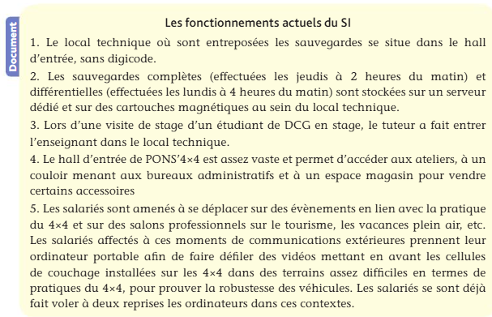
4.2.4 Les rôles des responsables de la sécurité
- Le responsable de la sécurité du système d’information (RSSI) met en œuvre toutes les actions permettant de sécuriser le SI ;
- Selon la taille, le secteur d’activité et l’âge de l’entreprise, le RSSI est en fonction à temps plein ou non, rattaché à la DSI ou à la direction générale.
La remise en état du SI après un incident
- Quand un problème affecte le SI, les responsables de la sécurité doivent mettre en œuvre les plans précédemment définis, de manière graduelle en fonction de la gravité de la situation et des dommages constatés :
- Plan de restauration des données permettant de remettre les données perdues ou volées ;
- Plan de reprise d’activité (PRA) ;
- Plan de continuité d’activité (PCA).
La mise en œuvre des conditions d’un SI sécurisé
- Les missions du responsable de la sécurité du SI ont vocation à s’assurer que le système d’information est fiable et répond aux besoins de l’entreprise :
- Il assure une veille technologique et réglementaire concernant la sécurité ;
- Il pratique un audit régulier de la sécurité et alerte sur les risques éventuels ;
- Il propose des solutions (notamment concernant l’architecture du SI et l’organisation des locaux en vue de leur sécurisation) ;
- Il sensibilise l’ensemble du personnel à la sécurité du système d’information (formation, charte de sécurité partagée, piqûres de rappel) ;
- Il s’assure de la bonne installation des logiciels anti-virus, des pare-feu et autres dispositifs de sécurisation ;
- Il définit le plan de sauvegarde des données et le PRA ;
- Il met en place les conditions d’organisation du télétravail.
La prise en compte du facteur humain
- La charte informatique, un outil de sensibilisation des salariés
- La charte informatique comporte diverses consignes et instructions ;
- C’est un document essentiel permettant de guider les utilisateurs vers de bonnes pratiques sur le système d’information.
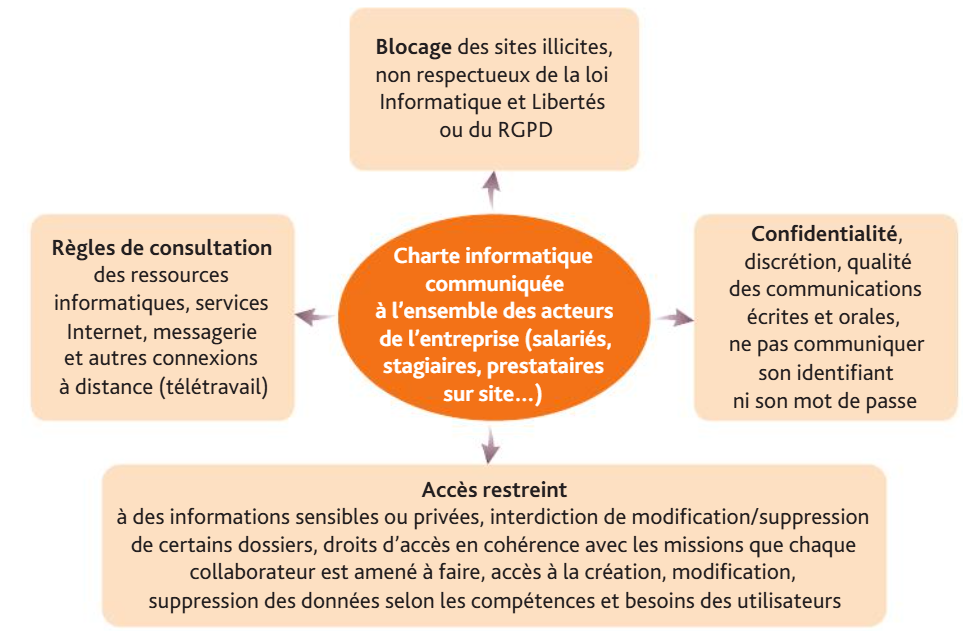
- Départ d’un salarié
- À la suite du départ d’un salarié (préavis échu, licenciement, mutation, départ à la retraite, démission), les droits d’accès au réseau doivent être actualisés ;
- Il est fondamental qu’un ex-salarié ne puisse plus accéder au réseau privé de l’entreprise (messagerie professionnelle, base de données, intranet, etc.) ;
- De même, ses outils de travail liés au SI à des fins exclusivement professionnelles, tels qu’un ordinateur portable, un téléphone mobile ou une tablette, doivent être restitués.
Exemple
Un salarié de l’entreprise ARTIC 44 a été licencié. Pendant sa période de préavis, il conserve ses droits d’accès au réseau, en cohérence avec ses missions, et ses matériels informatiques. Dès son départ effectif, les droits d’accès au réseau, données, messagerie professionnelle, etc., doivent être actualisés et les matériels restitués.
Mise en pratique
Cas pratique 4: Akureyri
Compétences attendues
- Identifier et hiérarchiser les principaux risques liés à la sécurité du SI
- Identifier les mesures de protection à mettre en place
- Appliquer les procédures de sécurité
- Analyser la fiabilité des procédures et des traitements
- Prendre en compte la dimension humaine dans la gestion des risques liés à la sécurité du SI
La société Akureyri fabrique et commercialise des produits textiles islandais. 60 % des ventes proviennent de marchandises importées, le reste est fabriqué dans un atelier où travaillent 73 personnes, dont 10 commerciaux, 4 comptables et la dirigeante. Les ventes en ligne se sont développées pour atteindre près de 65 % du chiffre d’affaires qui est cette année de 23,5 millions d’euros. Depuis sa création, la société fait appel à un prestataire extérieur, la société Myvatt (ESN), pour la conception et la maintenance d’un réseau composé de 25 postes de travail, de 4 serveurs sécurisés par un onduleur, ainsi que pour le développement du site Web. Les serveurs, l’onduleur et les supports de sauvegardes sont placés dans un bureau librement accessible situé près de la direction générale. L’ESN héberge le site Web par lequel transitent les commandes en ligne et les paiements sécurisés. Le contrat de services qui lie les deux sociétés, spécifie notamment :
- Que le réseau doit être opérationnel en permanence, sauf pendant les opérations de maintenance et de sauvegarde qui se font entre 20 heures et 2 heures du matin, et qu’il peut faire l’objet d’une à mise jour biannuelle des logiciels ;
- Que le site Web doit être disponible 24 heures sur 24 (à l’exception d’une heure par mois) ;
- Que le prestataire doit intervenir dans les 24 heures sur le local de la société en cas de problème ;
- Que le site Web doit être mis à jour avec un délai maximum de 48 heures quand le catalogue évolue. Missions
Commentez brièvement l’évolution du service rendu par le prestataire.
Identifiez les avantages et les inconvénients de la sous-traitance du site Web et de son hébergement par la société Myvatt.
Présentez les solutions qui s’offrent à la société Akureyri pour éviter les discontinuités de service du site Web (document 1).
Analysez la localisation des serveurs et supports de sauvegarde. La société envisage d’embaucher un informaticien, le site Web étant rapatrié sur un serveur dédié dans l’entreprise. Cette opération a fait l’objet d’une étude (documents 2 et 3).
Astuce
Utilisez vos connaissances personnelles et ne tenez pas compte de l’amortissement des immobilisations envisagées.
Missions
- Identifiez les avantages et les inconvénients de cette solution.
- Dans l’hypothèse où l’entreprise embaucherait un informaticien et ferait le choix d’héberger elle-même le site Web, précisez les précautions à prendre pour protéger les données du réseau.
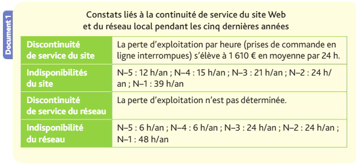
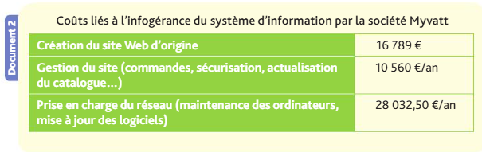
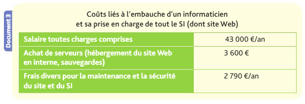
4.2.5 La signature et le certificat numériques
La signature électronique
Définition
La signature électronique (ou numérique) est un procédé répondant aux conditions d’identification de l’émetteur et de l’intégrité du document émis.
- La loi n° 2000-230 du 13 mars 2000 portant adaptation du droit de la preuve aux technologies de l’information et relative à la signature électronique dispose que « l’écrit sous forme électronique est admis en preuve au même titre que l’écrit sur support papier, sous réserve que la personne dont il émane puisse être dûment identifiée et qu’il soit établi et conservé dans des conditions de nature à en garantir l’intégrité » ;
- L’utilisation d’une définition de l’écrit électronique omettant ces deux conditions rend le procédé invalide.
L’intérêt et les usages de la signature électronique
- La signature électronique revêt une valeur légale et permet d’authentifier un engagement au même titre que la signature manuscrite (même force probante).
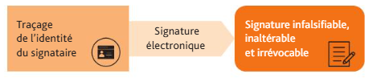
Les étapes d’une signature électronique
- Les étapes de signature électronique d’un contrat entre le fournisseur et le client peuvent se résumer ainsi :
- Un collaborateur commercial prépare le contrat ;
- Le client reçoit un lien d’accès au document par e-mail pour relecture et signature ;
- Le client signe électroniquement via un code transmis ;
- Le document est scellé et horodaté, garantissant l’intégrité du contenu et la date.
A savoir
N’oubliez pas qu’un document signé électroniquement, imprimé puis numérisé, perd sa valeur juridique puisque l’intégrité du contenu et l’authentification de l’émetteur ont pu être altérées.
Le certificat électronique
Définition
Le certificat électronique (ou numérique) constitue une carte d’identité virtuelle et permet d’identifier une personne physique ou morale.
- La signature électronique nécessite l’émission d’un certificat électronique par un organisme de confiance habilité par l’autorité de certification ;
- Ce prestataire engage sa responsabilité en cas de préjudice causé par l’utilisation d’un certificat inexact ou invalide ;
- Pour être valide, le certificat électronique doit garantir l’identité de son détenteur pendant une durée déterminée et contenir des informations relatives au nom du signataire, aux dates de validité du certificat, à son code d’identité et, éventuellement, à la qualité de son détenteur et à l’usage auquel il est destiné.
La sécurisation des échanges électroniques
- Seules les personnes habilitées doivent pouvoir consulter et accéder aux contenus transmis par voie électronique via le chiffrement (cryptage) des données ;
- Les contenus transmis par un émetteur doivent être identiques à ceux reçus par le destinataire grâce au hachage des données.
Les caractéristiques du chiffrement
Définition
Le chiffrement permet de rendre le contenu d’un document incompréhensible à toute personne ne disposant pas du mécanisme de déchiffrement (décryptage).
- Les données chiffrées circulent par voie électronique en toute confidentialité ;
- Modalités de chiffrement :
| Chiffrement symétrique | Procédure de chiffrement et de déchiffrement fonctionnant de façon symétrique reposant sur une clé de chiffrement unique qui permet à la fois de chiffrer et de déchiffrer tous les messages codés. |
|---|---|
| Chiffrement asymétrique ou chiffrement à clé publique | Utilisation de deux clés (trousseau) : l’une, privée, qui n’est jamais dévoilée et l’autre, publique, qui est communiquée aux correspondants avec lesquels une transmission d’informations secrètes est à organiser : - Les données chiffrées avec la clé privée ne peuvent être déchiffrées qu’avec la clé publique associée ; - Les données chiffrées avec la clé publique ne peuvent être déchiffrées qu’avec la clé privée associée. |
Les caractéristiques du hachage (hash coding)
- L’intégrité d’un document échangé signifie qu’il n’y a pas eu de modification du contenu entre l’émetteur et le destinataire ;
- La technique du hachage (hash coding) permet d’assurer cette finalité ;
- Elle est mise en œuvre par un programme permet de constituer une empreinte (ou haché ou condensé) unique à partir d’un texte.
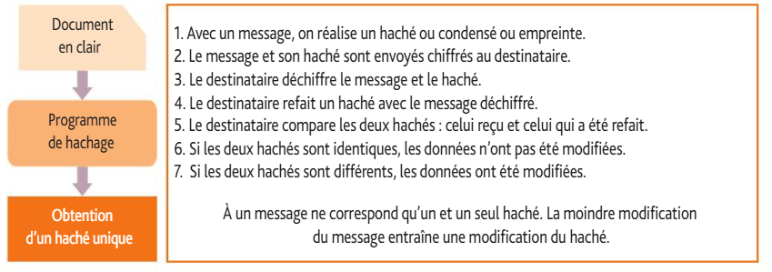
Les enjeux de sécurisation des échanges dématérialisés
- La démarche et le degré de sécurisation varient selon les enjeux ;
- Chaque entreprise doit adapter les mesures sécuritaires en fonction des risques et des besoins ;
- Enjeux de sécurisation des échanges :
| Objectifs à atteindre | Mécanismes à mettre en place |
|---|---|
| - Confidentialité - Intégrité - Authentification d’un émetteur ou d’un signataire - Non-répudiation (l’émetteur comme le destinataire ne peuvent nier l’envoi ou la réception des données) | - Chiffrement symétrique ou asymétrique - Hachage - Chiffrement asymétrique - Signature électronique - Accusé de réception sécurisé par chiffrement asymétrique |
Mise en pratique
Cas pratique 4 : Blonduos
Compétence attendue
Justifier le recours à la signature électronique et au certificat numérique.
Le cabinet d’expertise comptable Blonduos à Avignon vous accueille un mois en stage de DCG. Un collaborateur du cabinet, Cédric Flatey, souhaite que vous l’éclairiez sur quelques modalités de la dématérialisation des échanges. Théo Hallorm, client du cabinet, doit faire parvenir à Cédric Flatey un projet sur un montage financier dont il souhaiterait avoir des conseils. Cédric Flatey vous demande de lui présenter un schéma matérialisant la succession des étapes permettant d’assurer la confidentialité et l’intégrité de l’échange dématérialisé de ce projet financier du client vers Cédric Flatey. Le cabinet a coutume d’utiliser un chiffrement avec clés asymétriques dont la clé publique a déjà été communiquée à Théo Hallorm. Présentez et justifiez un schéma matérialisant la succession des étapes permettant d’assurer la confidentialité et l’intégrité de l’échange dématérialisé entre le client et Cédric Flatey.
4.2.6 La gestion de l’accès aux bases de données
Définition de domaines ou groupes de travail
- Les actions effectuées sur les bases de données varient selon les acteurs.
Exemple
Chez Carton Plein, une personne du service commercial qui traite les relations avec les clients n’a pas à modifier la table ARTICLE, elle a juste besoin de la consulter pour réaliser les tâches qui lui sont attribuées.
- La définition de droits d’accès aux tables pour chacun des utilisateurs ou groupe d’utilisateurs est une manière d’assurer la sécurité des données ;
- L’organisation doit contrôler l’accès à son réseau, à ses ressources et à ses données confidentielles ;
- La détermination des droits requiert la création de groupes de travail ou de domaines dans le réseau en fonction des rôles de chacun ;
- Les domaines permettent de limiter l’action des utilisateurs pour des raisons de confidentialité aux seules données qui leur sont nécessaires ;
- Ainsi, des commerciaux ne doivent pas avoir accès aux données de la paie ; seuls les membres du groupe PAIE peuvent accéder ou modifier le contenu des tables de données de la paie de l’entreprise.
Définition
Les domaines regroupent des utilisateurs ayant accès à des ressources similaires et, en général, aux mêmes processus et tâches (groupe de travail).
- Un acteur peut participer à plusieurs domaines ou groupes de travail.
Exemple L’entreprise Carton Plein a créé des groupes de travail différents :
- Paie ;
- Commande client ;
- Livraison client ;
- Création produits ;
- Montage produits.
Carton Plein souhaiterait regrouper ses salariés par groupes de travail.
Un représentant commercial est en charge d’un groupe de clients qu’il visite régulièrement et qu’il questionne sur les besoins en matériel de communication.
Le livreur reçoit les ordres de livraison des représentants commerciaux.
L’ingénieur de production participe à la mise au point des opérations de montage des produits et à la création des produits futurs de l’entreprise.
Un tableau permet de visualiser facilement l’affectation des acteurs aux différents groupes de travail.
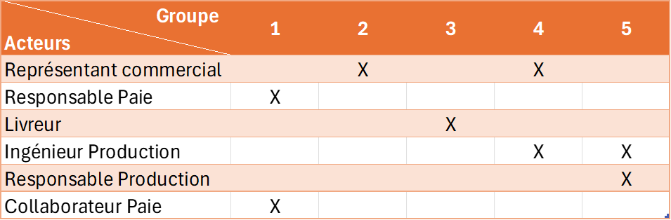
Attribution des autorisations d’accès aux bases de données
Définition
Un droit d’accès correspond à la liste des actions que peut entreprendre un utilisateur donné.
- Pour chaque utilisateur ou groupe d’utilisateurs, souvent également en fonction de leur niveau hiérarchique, on définit des droits ou autorisations d’accès sur les tables qui peuvent être :
- C (création de données) ;
- I (interrogation de données) ;
- M (modification de données) ;
- S (suppression de données).
- Ces droits traduisent les types de requêtes qu’il est possible d’effectuer sur les bases de données.
Exemple (suite) Chez Carton Plein, les nouvelles recrues, leurs absences pour maladie et congé, leurs départs éventuels sont enregistrés par Octave. Son responsable, Edgar, peut également le remplacer lorsqu’il est absent. Sandra, qui établit la paie, consulte le dossier du salarié, ses congés et ses absences éventuelles, ainsi que les salaires des mois précédents. Une fois le salaire à verser enregistré par Sandra, il est contrôlé par Jacques, son responsable, habilité à le modifier et à prendre le relais en cas d’absence. Les fonctions et services sont définis par la *direction *de l’entreprise. Les membres des ressources humaines sont amenés à les consulter lors de l’exécution de leurs activités. Le modèle relationnel de l’entreprise Carton Plein peut être établi :
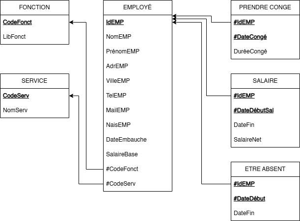
Les droits des utilisateurs sur chaque table de la base sont récapitulés dans le tableau suivant :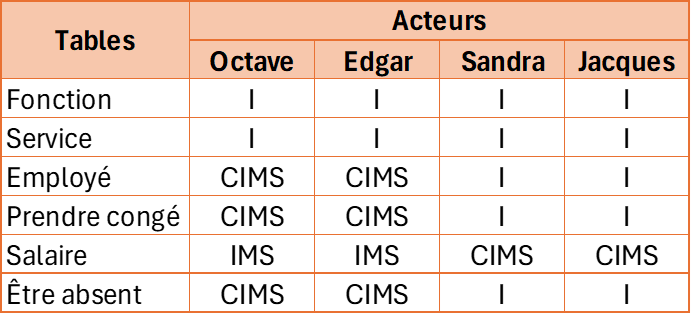
Exemple (suite) Sandra, qui établit la paie, doit pouvoir :
- Obtenir les informations nécessaires en interrogeant les tables Fonction, Service, Employé, Prendre congé et Être absent ;
- Créer une nouvelle ligne dans la table Salaire afin d’enregistrer les payes mensuelles ;
- Modifier dans la table Salaire une ligne en cas d’erreur. Jacques, son responsable, lequel doit contrôler le travail de Sandra, doit avoir accès aux mêmes informations. *Octave *doit pouvoir :
- Interroger les tables services et fonctions pour lorsqu’il gère les ressources humaines ;
- Créer une nouvelle ligne dans la table Employé lorsqu’un nouveau collaborateur est embauché ;
- Créer une nouvelle ligne dans la table Prendre congé lorsqu’un collaborateur est en congé ;
- Créer une nouvelle ligne dans la table Être absent lorsqu’un collaborateur s’absent ;
- Modifier les tables Employé, Prendre congé et Être absent si nécessaire ;
- Supprimer la ligne correspondant à un employé qui aurait quitté l’entreprise et, pour respecter l’intégrité référentielle, supprimer également les lignes des tables Prendre congé et Être absent dans lesquelles cet employé sortant apparaît ;
- Supprimer les lignes des salaires payés aux sortants pour respecter l’intégrité référentielle. Edgar, qui doit remplacer *Octave *en cas d’absence, doit disposer des mêmes droits que lui.
Mise en pratique
Synthèse
Prise en compte des défauts de sécurité et anticipation
- Discontinuité de service et risque de perte de données ;
- Risque de divulgation des données et de perte de temps pour réparer le SI ;
- Engagement civil et pénal de l’entreprise ;
- Coûts liés aux pertes de temps, au non travail ;
- Recenser les risques ;
- Hiérarchiser la gravité des risques ;
- Traiter les risques avant qu’ils surviennent.
Organisation d’un SI fiable
- Plan de sauvegarde des données ;
- Pan de restauration des données (PRD) ;
- Plan de reprise d’activité (PRA).
Identification des risques
- Risques matériels : sinistres sur les ordinateurs, serveurs, vol, pannes, maladresses humaines, dégradation volontaire ;
- Malveillances : propagation de programmes malveillants, fraude et agissements internes malveillants, exploitation indésirable de la messagerie ;
- Carences : non-respect des procédures, méconnaissance de la loi et RGPD, incompétences sur les logiciels ;
- Critères de sécurité et de confidentialité.
Rôles des responsables de la sécurité
- Remettre en état le SI après un incident ;
- Mettre en œuvre les conditions favorables à un SI sécurisé ;
- Gérer les risques en tenant compte du facteur humain.
Signature et certificats électroniques
- Loi du 13 mars 2000
- Signature électronique
- Certificat numérique
- Sécurisation des échanges (chiffrement, hachage, …)